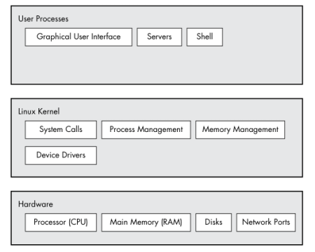

# Linux - Kernel
• The kernel is the core of the operating system
There are 3 levels of abstraction in the Linux system architecture:
• User Space
• Kernel Land
• Hardware
## User Space
• User space is what the user interacts with
• The everyday programs/services that you use on a computer will reside in user land
• Code that runs in user space processes has access to a restricted subset of memory and safe CPU operations
◇ If an error occurs and the code crashes, only that program will close and not the whole system
◇ If a user had unrestricted access to hardware, they could severley break the system
• If a user space process wants to interface with hardware
◇ e.g. write data to disk
◇ It uses syscalls
◇ The kernel make certain functions available via the syscall API
▪ read/write a file
▪ modify memory usage
▪ modify the network
▪ etc.
◇ You can view syscalls a process makes with strace -
strace ls• Privilege level = ring 3
## Kernel Land
• The kernel is software that resides in memory that tells the CPU what to do
• The kernel is the core of the operating system.
◇ It acts as an interface between hardware and software (user space processes)
◇ And has complete control over the hardware.
▪ If a user space process wants to write data to disk - it will call kernel functions which cause the disk to start spinning and write data
• Code running in kernel land has unrestricted access to the processor/memory/hardware
• Privilege level = ring 0
## Hardware
• The physical layer/components of the PC
◇ CPU
◇ RAM
◇ Hard disks
◇ Network cards
◇ etc.
Linux system organisation